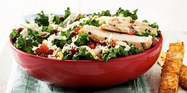

Fresh Chicken Cesar Kale Salad

Want to enjoy an amazing coloful, healty, and very flavorful bowl? Look no further, of course who doesnt like a salad. A fresh cesar chicken kale salad, mixed together with whatever you like to add. So many option and a very easy meal prep dish. Perfect light lunch to pack everyday!
Fresh Ingredients required:
For Dressing:
3 egg yolks
3 cloves garlic, crushed
1 tablespoon Dijon mustard
1/4 cup (60ml) extra virgin olive oil
1 tablespoon apple cider vinegar
For Crispy Kale:
8 stalks kale, trimmed
2 tablespoons extra-virgin olive oil
1/3 cup (25g) finely grated Parmesan
Sea salt and cracked black pepper
For Chicken and Assembly:
4 (200g) chicken breast fillets, trimmed
Extra-virgin olive oil, for brushing
Sea salt and cracked black pepper
1 cup (200g) shredded Brussels sprouts
2 baby cos (romaine) lettuces (360g), trimmed and leaves separated
3 cups (75g) baby spinach leaves
1/2 cup (80g) pine nuts